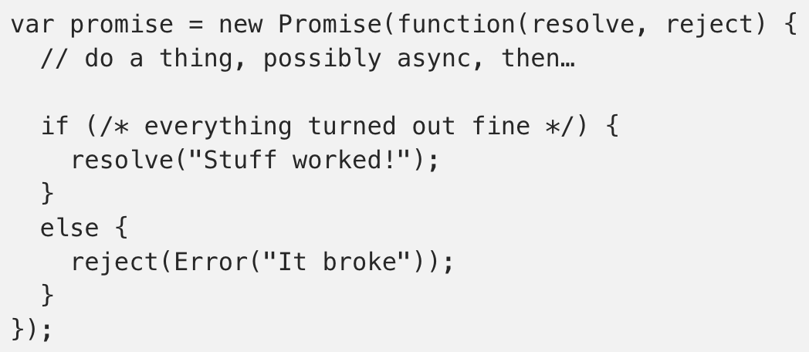
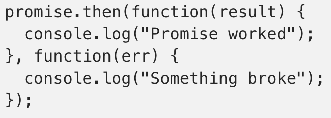

Javascript
Back to Front-End Essentials
HTML
CSS
React
The DOM
- Document Object Model - JavaScript object that represents the
document (web page). Provides properties and functions for developers to use to manipulate the web page
document.getElementById("") returns a JS object that represents the elementdocument.getElementsByClassName() and document.getElementsByTagName() both return an HTMLCollection, which is like an array, of the elements- On the element returned, use
textContent (best for text), .innerHTML, or .innerText to access and set values
document.querySelector("div#my-id > p") - returns the first object that is a child p of a div with id #my-iddocument.querySelectorAll() - returns a NodeList of objects that match the CSS query. Can conver to array with Array.from(myNodeList);document.body.style.textAlign = "center" - the style property is an object with CSS styles. Note text-align is changed to textAlign. (also, this is an easy way to get the body)
- Careful: This adds style in the form of inline HTML. If you try to retrieve style that wasn't added in the HTML inline style tag, it will not be able to!!
- In that case, use
window.getComputedStyle(myElement) to get a CSSStyleDeclaration that you can call .color, etc on
document.querySelector("#header").className += " new-class" - add a class to an element, but removal is difficultdocument.querySelector("#header").classList.remove("my-class") - use add(), remove(), toggledocument.createElement("li")myList.append(newLi) - append() and prepend() adds the parameter element into the original, either at top or bottom
appendChild() is similar, but more strict.
- With
append(), you can use append("some string") into a parent to look like <div>Appending Text</div>. Not accepted with appendChild()
append() does not have a return value, but appendChild() returns the appended Node object- You can
parent.append(child, childTwo) for multiple children, but appendChild() only allows a single child
- Can also use
document.body.innerHTML += "<p>hi</p>" to append. This doesn't create objects, just takes in a string. Generally okay for simple text where you don't need control over the object
- Remove elements with
unwantedElement.remove() or parentElement.removeChild(unwantedChild)
- Event Listeners -
myElement.addEventListener("event", function);
- Events like "click" or "keypress"
- Keep in mind it's the function name, not with ()
- Generally recommended over
myElement.onclick = () => {...} because it allows multiple events, but onclick is quick and easy.
Promises
An object that may produce a single value some time in the future for if the value is not known when the promise is created.
A promise can only be in one of 3 states, and once it reaches a resolved state, it cannot be changed: pending, fulfilled, and rejected.

The promise constructor takes in a function with two parameters, resolve(), and reject().

Every promise object has a .then() method that takes in 2 optional callback functions for the success and failure cases of the promise. Because .then() returns a new promise object, it is possible to chain promises. This allows us to mimic synchronous code with asynchronous functions.
Promises are built on top of callbacks to write sequential asynchronous code with error catching.
Event Delegation
Add event listeners to parent instead of child elements. Uses less memory (don't need one for every child) and don't need to unbind and rebind for different children.
JS Modules
Sectioning your code into self-contained parts that are not dependent on each other, so you can make changes without disrupting everything else. Allows you to not worry as much about sharing global variable names.
ES6 / ES7 / ES8 / ES9
ES6:
- Arrow Syntax
- Classes
- Spread Syntax (and Rest)
- let and const
- Iterators & Generators
- Modules
- Promises
- Tail Calls
ES7:
- Array.prototype.includes()
- Exponents: x ** y
ES8:
- Async Functions: async function foo() {} or const foo = async function () {};
- Shared Memory & Atomics
ES9:
- Asynchronous Iteration
- Rest/Spread Operators working with Objects
Closure
Closed Over Variable Environment (COVE)
Creating persistent memory (variables/data) from an outer function accessible to an inner, generated function. Every function created receives data from the memory space where the function definition lives (normally global).

Memoization
A technique of storing the results of function calls and returning the cached result when it receives the same input again. Helps to optimize performance by not calling expensive functions more than once.
Built upon the concepts of closure and higher-order functions (returning functions from functions).